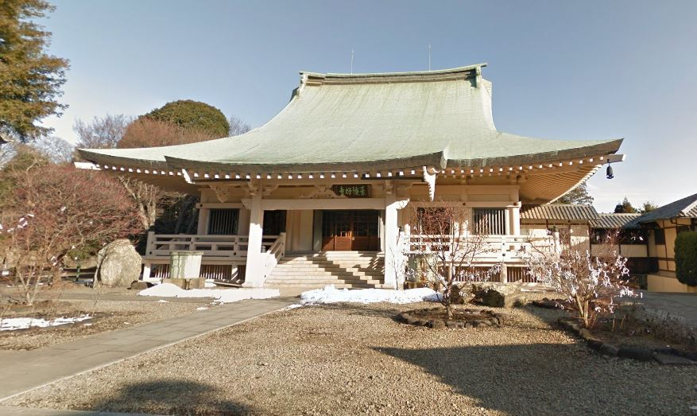

Une journée d'un étudiant à Tokyo
Slice-Of-Life
Daily
Tokyo
Japan
Fuji Taki
@fujioxo
Beaucoup de mes amis vivant à l'étranger me demandent "ça fait quoi de vivre à Tokyo?". Vu que c'était une question fréquente je me suis dis d'écrire un petit post sur mon quotidien d'étudiant à Tokyo!
Laissez-moi me présenter...
Mais avant ça, je me présente! Je suis Fuji Taki, mon prénom c'est Taki et mon nom Fuji. J'ai actuellement 17 ans et je vis dans la métropole de Tokyo, précisement dans l'arrondissement Setagaya et est étudiant au lycée Tokyo Metropolitan Kokusai.

C'est mon lycée!
La journée
Je commence mes journées de cours généralement à 8:35 mais le problème est que il y a environ 40 minutes de route à pied ಠ╭╮ಠ. Du coup au lieu de me réveiller hyper tôt pour faire 40 minutes de marche, j'utilise mon vélo :D (je mets 14 minutes de route et c'est merveilleux)
Avec tout ça, je me réveille à environ 7:15, le temps de manger, me préparer etc.. et je pars à 8:10 pour arriver un peu en avance en cas de retard.
Une fois arrivée au lycée je dois aller à mon casier pour changr de chaussures (eh oui, nous sommes probablement les seuls à faire ça mais c'est pas grave)
Bon bref! 8:35 = début des cours! Et personnellement je commence avec histoire!
Actuellement en histoire, nous apprenons par rapport aux histoires anciennes chinoises, européennes (sur Rome notamment). Durant l'année nous verrons aussi les guerres mondiales (à différent de la France où là bas les guerres mondiales sont apprises au collège)
9:35 = Fin du cours d'histoire, place à l'art plastique!
En art plastique rien de spécial, on s'amuse avec une sorte de pâte à modeler ? (Je sais vraiment pas ce que c'est, je demanderai au professeur promis) en tout cas je sais que hier (Vendredi) on a fait ça. Sinon les autres jours on fait juste des petites peintures en apprenant diverses techniques :)

10:35, une petite pause? :)
Pendant la récréation je vais à mon endroit ✨ spécial ✨
Un arbre!
Oui mon endroit spécial c'est cet arbre :) Généralement avec mes amis on s'assied en dessous de l'arbre au milieu de l'image, c'est assez sympathique! Sur ce point on fait comme dans les autres lycées du monde entier (ptêtre pas la corée du nord) mais on discute, on rigole c'est fun!
Après le réconfort, c'est reparti!
10:50 = Retour en classe!
Dernière matière de la matinée pour ce vendredi : les Maths !
Alors personnellement j'adore les maths, c'est fascinant non? En ce moment on apprend juste à résoudre des équations un peu complexe mais c'est OK !
11:50 Fin de matinée !
Bon généralement j'ai faim à ce moment là, voire, BEAUCOUP faim.
Alors certains de mes amis le font pour manger, mais perso je ne retourne pas chez moi pour manger! Nan je vais juste à des petites supérettes de Tokyo à côté du lycée prendre ce que j'ai envie de manger :)
Ce que vous voyez sur la gauche (les distributeurs) il y en a partout dans les rues pour acheter des boissons! J'en prends en passant :)
Pendant la pause du midi j'ai beaucoup de temps libre (eh oui je suis l'un des rares chanceux à reprendre les cours à 15:00)
C'est pendant la pause où je me balade un peu dans le coin pour me ressourcer, prendre l'air et voir de beaux paysages!
Eh pas mal nan??? Je sais c'est beau
Au fait! Beacoup de gens connaissent ces portes, mais les petites portes rouge que vous voyez, comme sur la première photo, ça s'appelle des portes Torii!
Et pour la partie histoire, ces portes sont une tradition et sont érigées à l'entrée de sanctuaire shintoïste!
Au fait, il y aussi des contraintes de vivre à Tokyo hein! Malgré les beaux paysages et la métropole beaucoup de problèmes!
Déjà le te traffic sur les routes avec mon vélo c'est galère! Vous le saviez-vous que Tokyo compte 14 millions d'habitants? Imaginez ça sur la route, c'est bombé!
Aussi ce qui est énervant c'est qu'il y a des escaliers PARTOUT ! c'est chiant à vélo!
Vous me direz donc d'utiliser les transports en communs, le problème à Tokyo c'est qu'il y en a peu et quand il y en a, ils sont pas toujours adaptés.
Et aussi ce qui est dommage c'est le manque de nature :/ Heureusement qu'à mon lyéce y'en a car on s'ennuie vite à voir des buildings partout :(
Les cours reprennent!
(Bon je vous passe les détails 1 fois sur 2 je peux être en retard bahaha)
Je reprends donc les cours à 15:00 pour les finir à 17:00!
Bon j'avoue là j'ai de la chance, on va dire que c'est pas vraiment des matières où je travaille, nan là c'est SPORT !!!
Bahaha beaucoup de mes amis sont dégoûtés car eux ils ont 2h de biologie !
Bon sinon en sport, rien de particulier ou de différent d'ailleurs, comme tout le monde, on fait de l'endurance, volley, handball etc pas trop de changement de ce côté!
Retour à la maison ┗|'O'|┛
On reprend le vélo et c'est parti!
Sur le chemin du retour je m'arrête de nouveau à une supérette pour prendre à manger le soir quand je suis seul à la maison, et après l'avoir acheter je retourne sur le chemin :)
Sur le retour c'est une autre ambiance, surtout en hiver! Il fait déjà tout sombre ce que l'ont voit c'est juste les lumières que produisent les voitures avec les phares, ou les néons des magasins! Et paradoxalement, c'est très calme!
Une fois rentrée chez moi, je me mets mon sac dans la chambre, je m'amuse un peu puis après les devoirs. Et après les devoirs je mange ce que j'ai acheté (puis après je me re-amuse en jouant à des jeux type Minecraft, CSGO des trucs comme ça avec les amis)
C'est fini!! Merci d'avoir lu! :D
Télécharger les images
Publié le 30/11/2022